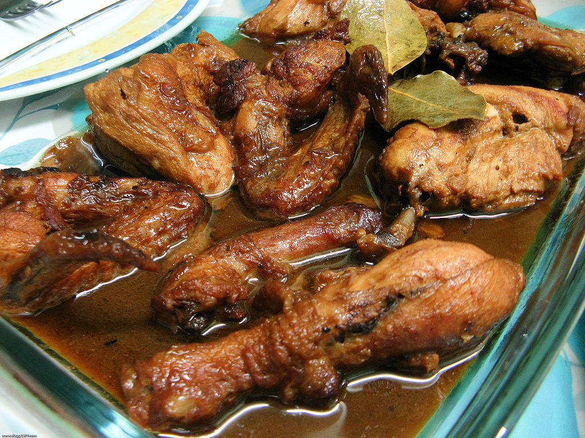

Description
Filipino Chicken Adobo is the national dish of the Philippines
and may well become your new favourite Asian chicken dish!
Just a few everyday ingredients I can practically guarantee
you already have, it is an effortless recipe that yields juicy,
tender chicken coated in a sweet savoury glaze with little pops
of heat from peppercorns.
This is a chicken thigh recipe and it MUST be made with thighs.
No substituting with chicken breast!
Ingredients
- 1 kg chicken thighs
- 5 cloves Garlic
- Half-cup soy sauce
- Quarter-cup white vinegar
- 1 tbsp Black peppercorns
- 5 bay leaves
- 3 tbsp Cooking oil
- Optional: 1 tbsp brown sugar
Steps
- Pour cooking oil in a pan and let it heat up for a minute.
- Add garlic and saute until fragrant.
- Add chicken thighs and let cook until the skin is slightly browned.
The chicken does not have to be completely cooked.
- Add the soy sauce, black peppercorns, bay leaves, brown sugar and white vinegar.
- Cover and let the ingredients simmer for 20 to 30 minutes
or until the chicken is fully cooked.
- Serve with hot rice!
Return to top
Return to main page